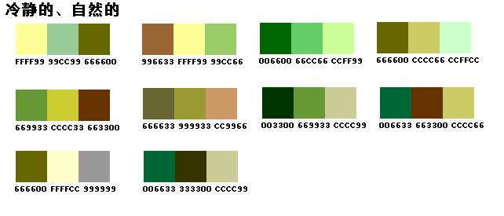

常用颜色 发表于 2018-06-04 | 阅读量 次 | 分类于 Android ， UI ， color android开发中常用的一些颜色：  123456789101112131415161718192021222324252627282930313233343536373839404142434445464748495051525354555657585960616263646566676869707172737475767778798081828384858687888990919293949596979899100101102103104105106107108109110111112113114115116117118119120121122123124125126127128129130131132133134135136137138139140141142143144145146147148149<?xml version="1.0" encoding="utf-8" ?> <resources> <color name="white">#FFFFFF</color><!--白色 --> <color name="ivory">#FFFFF0</color><!--象牙色 --> <color name="lightyellow">#FFFFE0</color><!--亮黄色 --> <color name="yellow">#FFFF00</color><!--黄色 --> <color name="snow">#FFFAFA</color><!--雪白色 --> <color name="floralwhite">#FFFAF0</color><!--花白色 --> <color name="lemonchiffon">#FFFACD</color><!--柠檬绸色 --> <color name="cornsilk">#FFF8DC</color><!--米绸色 --> <color name="seashell">#FFF5EE</color><!--海贝色 --> <color name="lavenderblush">#FFF0F5</color><!--淡紫红 --> <color name="papayawhip">#FFEFD5</color><!--番木色 --> <color name="blanchedalmond">#FFEBCD</color><!--白杏色 --> <color name="mistyrose">#FFE4E1</color><!--浅玫瑰色 --> <color name="bisque">#FFE4C4</color><!--桔黄色 --> <color name="moccasin">#FFE4B5</color><!--鹿皮色 --> <color name="navajowhite">#FFDEAD</color><!--纳瓦白 --> <color name="peachpuff">#FFDAB9</color><!--桃色 --> <color name="gold">#FFD700</color><!--金色 --> <color name="pink">#FFC0CB</color><!--粉红色 --> <color name="lightpink">#FFB6C1</color><!--亮粉红色 --> <color name="orange">#FFA500</color><!--橙色 --> <color name="lightsalmon">#FFA07A</color><!--亮肉色 --> <color name="darkorange">#FF8C00</color><!--暗桔黄色 --> <color name="coral">#FF7F50</color><!--珊瑚色 --> <color name="hotpink">#FF69B4</color><!--热粉红色 --> <color name="tomato">#FF6347</color><!--西红柿色 --> <color name="orangered">#FF4500</color><!--红橙色 --> <color name="deeppink">#FF1493</color><!--深粉红色 --> <color name="fuchsia">#FF00FF</color><!--紫红色 --> <color name="magenta">#FF00FF</color><!--红紫色 --> <color name="red">#FF0000</color><!--红色 --> <color name="oldlace">#FDF5E6</color><!--老花色 --> <color name="lightgoldenrodyellow">#FAFAD2</color><!--亮金黄色 --> <color name="linen">#FAF0E6</color><!--亚麻色 --> <color name="antiquewhite">#FAEBD7</color><!--古董白 --> <color name="salmon">#FA8072</color><!--鲜肉色 --> <color name="ghostwhite">#F8F8FF</color><!--幽灵白 --> <color name="mintcream">#F5FFFA</color><!--薄荷色 --> <color name="whitesmoke">#F5F5F5</color><!--烟白色 --> <color name="beige">#F5F5DC</color><!--米色 --> <color name="wheat">#F5DEB3</color><!--浅黄色 --> <color name="sandybrown">#F4A460</color><!--沙褐色 --> <color name="azure">#F0FFFF</color><!--天蓝色 --> <color name="honeydew">#F0FFF0</color><!--蜜色 --> <color name="aliceblue">#F0F8FF</color><!--艾利斯兰 --> <color name="khaki">#F0E68C</color><!--黄褐色 --> <color name="lightcoral">#F08080</color><!--亮珊瑚色 --> <color name="palegoldenrod">#EEE8AA</color><!--苍麒麟色 --> <color name="violet">#EE82EE</color><!--紫罗兰色 --> <color name="darksalmon">#E9967A</color><!--暗肉色 --> <color name="lavender">#E6E6FA</color><!--淡紫色 --> <color name="lightcyan">#E0FFFF</color><!--亮青色 --> <color name="burlywood">#DEB887</color><!--实木色 --> <color name="plum">#DDA0DD</color><!--洋李色 --> <color name="gainsboro">#DCDCDC</color><!--淡灰色 --> <color name="crimson">#DC143C</color><!--暗深红色 --> <color name="palevioletred">#DB7093</color><!--苍紫罗兰色 --> <color name="goldenrod">#DAA520</color><!--金麒麟色 --> <color name="orchid">#DA70D6</color><!--淡紫色 --> <color name="thistle">#D8BFD8</color><!--蓟色 --> <color name="lightgray">#D3D3D3</color><!--亮灰色 --> <color name="lightgrey">#D3D3D3</color><!--亮灰色 --> <color name="tan">#D2B48C</color><!--茶色 --> <color name="chocolate">#D2691E</color><!--巧可力色 --> <color name="peru">#CD853F</color><!--秘鲁色 --> <color name="indianred">#CD5C5C</color><!--印第安红 --> <color name="mediumvioletred">#C71585</color><!--中紫罗兰色 --> <color name="silver">#C0C0C0</color><!--银色 --> <color name="darkkhaki">#BDB76B</color><!--暗黄褐色 --> <color name="rosybrown">#BC8F8F</color><!--褐玫瑰红 --> <color name="mediumorchid">#BA55D3</color><!--中粉紫色 --> <color name="darkgoldenrod">#B8860B</color><!--暗金黄色 --> <color name="firebrick">#B22222</color><!--火砖色 --> <color name="powderblue">#B0E0E6</color><!--粉蓝色 --> <color name="lightsteelblue">#B0C4DE</color><!--亮钢兰色 --> <color name="paleturquoise">#AFEEEE</color><!--苍宝石绿 --> <color name="greenyellow">#ADFF2F</color><!--黄绿色 --> <color name="lightblue">#ADD8E6</color><!--亮蓝色 --> <color name="darkgray">#A9A9A9</color><!--暗灰色 --> <color name="darkgrey">#A9A9A9</color><!--暗灰色 --> <color name="brown">#A52A2A</color><!--褐色 --> <color name="sienna">#A0522D</color><!--赭色 --> <color name="darkorchid">#9932CC</color><!--暗紫色 --> <color name="palegreen">#98FB98</color><!--苍绿色 --> <color name="darkviolet">#9400D3</color><!--暗紫罗兰色 --> <color name="mediumpurple">#9370DB</color><!--中紫色 --> <color name="lightgreen">#90EE90</color><!--亮绿色 --> <color name="darkseagreen">#8FBC8F</color><!--暗海兰色 --> <color name="saddlebrown">#8B4513</color><!--重褐色 --> <color name="darkmagenta">#8B008B</color><!--暗洋红 --> <color name="darkred">#8B0000</color><!--暗红色 --> <color name="blueviolet">#8A2BE2</color><!--紫罗兰蓝色 --> <color name="lightskyblue">#87CEFA</color><!--亮天蓝色 --> <color name="skyblue">#87CEEB</color><!--天蓝色 --> <color name="gray">#808080</color><!--灰色 --> <color name="grey">#808080</color><!--灰色 --> <color name="olive">#808000</color><!--橄榄色 --> <color name="purple">#800080</color><!--紫色 --> <color name="maroon">#800000</color><!--粟色 --> <color name="aquamarine">#7FFFD4</color><!--碧绿色 --> <color name="chartreuse">#7FFF00</color><!--黄绿色 --> <color name="lawngreen">#7CFC00</color><!--草绿色 --> <color name="mediumslateblue">#7B68EE</color><!--中暗蓝色 --> <color name="lightslategray">#778899</color><!--亮蓝灰 --> <color name="lightslategrey">#778899</color><!--亮蓝灰 --> <color name="slategray">#708090</color><!--灰石色 --> <color name="slategrey">#708090</color><!--灰石色 --> <color name="olivedrab">#6B8E23</color><!--深绿褐色 --> <color name="slateblue">#6A5ACD</color><!--石蓝色 --> <color name="dimgray">#696969</color><!--暗灰色 --> <color name="dimgrey">#696969</color><!--暗灰色 --> <color name="mediumaquamarine">#66CDAA</color><!--中绿色 --> <color name="cornflowerblue">#6495ED</color><!--菊兰色 --> <color name="cadetblue">#5F9EA0</color><!--军兰色 --> <color name="darkolivegreen">#556B2F</color><!--暗橄榄绿 --> <color name="indigo">#4B0082</color><!--靛青色 --> <color name="mediumturquoise">#48D1CC</color><!--中绿宝石 --> <color name="darkslateblue">#483D8B</color><!--暗灰蓝色 --> <color name="steelblue">#4682B4</color><!--钢兰色 --> <color name="royalblue">#4169E1</color><!--皇家蓝 --> <color name="turquoise">#40E0D0</color><!--青绿色 --> <color name="mediumseagreen">#3CB371</color><!--中海蓝 --> <color name="limegreen">#32CD32</color><!--橙绿色 --> <color name="darkslategray">#2F4F4F</color><!--暗瓦灰色 --> <color name="darkslategrey">#2F4F4F</color><!--暗瓦灰色 --> <color name="seagreen">#2E8B57</color><!--海绿色 --> <color name="forestgreen">#228B22</color><!--森林绿 --> <color name="lightseagreen">#20B2AA</color><!--亮海蓝色 --> <color name="dodgerblue">#1E90FF</color><!--闪兰色 --> <color name="midnightblue">#191970</color><!--中灰兰色 --> <color name="aqua">#00FFFF</color><!--浅绿色 --> <color name="cyan">#00FFFF</color><!--青色 --> <color name="springgreen">#00FF7F</color><!--春绿色 --> <color name="lime">#00FF00</color><!--酸橙色 --> <color name="mediumspringgreen">#00FA9A</color><!--中春绿色 --> <color name="darkturquoise">#00CED1</color><!--暗宝石绿 --> <color name="deepskyblue">#00BFFF</color><!--深天蓝色 --> <color name="darkcyan">#008B8B</color><!--暗青色 --> <color name="teal">#008080</color><!--水鸭色 --> <color name="green">#008000</color><!--绿色 --> <color name="darkgreen">#006400</color><!--暗绿色 --> <color name="blue">#0000FF</color><!--蓝色 --> <color name="mediumblue">#0000CD</color><!--中兰色 --> <color name="darkblue">#00008B</color><!--暗蓝色 --> <color name="navy">#000080</color><!--海军色 --> <color name="black">#000000</color><!--黑色 --> </resources>